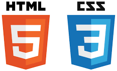

Réflexion sur la neutralité d’Internet
Mettre en parallèle la technologie et les pratiques humaines à partir de la question de la neutralité d’Internet.
Questionner les principes du réseau
Nous avons abordé ici certains principes techniques qui régissent le web, la toile, Internet.
On demande de :
- Est-ce que vous trouvez ces principes égalitaires ?
- Faut-il que Internet soit égalitaire ?
- Pensez-vous possible qu’un état puisse changer la règle de neutralité ? Comment ?
- Qui garantit la neutralité d’internet en France et en Europe ?
Réaliser un exposé sur la neutralité d’internet qui détaillera votre réflexion à ce sujet. Vous utiliserez pour cela un logiciel de présentation assisté par ordinateur.
Ces exposés doivent mettre en parallèle la technologie et les pratiques humaines.
Au-delà la question de la neutralité du net, il faut aussi se demander ce que l’Internet suscite aujourd’hui : quelles inquiétudes il fait naître, quels espoirs il alimente, quelles transformations il a provoquées et ce qu’il pourrait devenir dans les années à venir. Internet est à la fois une infrastructure technique, un espace d’échange, une source de connaissance et un terrain de conflit entre liberté, puissance économique et régulation. Cette réflexion s’inscrit dans une question plus grande : comment faire vivre un réseau mondial qui soit à la fois utile, juste, sûr et respectueux des droits des personnes ?
Pour aller plus loin, vous pouvez travailler sur six sujets d’exposé qui interrogeront, en groupe, les grands enjeux techniques, économiques, politiques et humains d’Internet. Chaque groupe choisira un thème, préparera un diaporama et le présentera à l’oral.

Trois dimensions à explorer
Enjeux économiques
Les enjeux économiques autour de la maîtrise du réseau : « pourquoi les américains ont-ils renoncé à la neutralité du net ? Doit-on faire pareil ? (Voir extrait de l’article ci-joint pour mieux comprendre cette question).
Qui finance le net ? les entreprises, les utilisateurs, les pouvoirs publics ?...
Enjeux politiques
Les enjeux politiques autour du réseau : Qu’est-ce que le grand firewall chinois ? Comment fonctionne-t-il ?
Quelles sont les conséquences en matière de démocratie ? (voir extrait de l’article ci-joint qui illustre parfaitement les méthodes pour contrôler Internet ). Doit-on contrôler le réseau ? le réguler ?
Enjeux sociaux
Les enjeux sociaux autour du réseau : Comment préserver sa vie privée sur le réseau ? Mes informations sont-elles suffisamment sécurisées ? Est-ce que la vie privée est menacée ? La cyber criminalité : qu’est-ce que c’est ? L’espionnage industriel ? Le droit à l’oubli ? …
La neutralité du net
Vous avez entendu parler ces dernières semaines de la neutralité du net, mais le sujet vous a paru technique et rebutant ? Pourtant, il est crucial pour le futur d’Internet, et pas si compliqué à comprendre. Décryptage alors que l'autorité de régulation américaine vient de se prononcer contre ce principe.
1 - C’est quoi la neutralité du net ?
Défendre la neutralité du net, c’est prôner l’égalité de traitement entre tous les flux de données sur Internet. “Il faut voir Internet comme des tuyaux par lesquels transitent des paquets de données”, explique Serge Abiteboul, chercheur à l’Inria. “La neutralité du net, c’est dire que les gens qui contrôlent les tuyaux, c’est à dire les fournisseurs d’accès à Internet, n’ont pas leur mot à dire sur les contenus qui passent par les tuyaux”. En gros, tout le monde est logé à la même enseigne, et un fournisseur d’accès à Internet (FAI) comme SFR par exemple, ne peut pas offrir une connexion plus rapide à ceux qui se connectent pour lire le site web de Libération (qui appartient au même groupe) qu’à ceux qui lisent LesEchos.fr. Il y a donc deux enjeux principaux autour de la neutralité du net. Le premier est lié à nos libertés individuelles fondamentales : chacun a le droit de lire et de publier du contenu sur Internet, en respectant la loi bien sûr, sans qu’un FAI ne décide de ce qui est prioritaire. Le second aspect est celui de la concurrence économique. Comme dans l’exemple de SFR, garantir la neutralité du net c’est éviter qu’une entreprise donne un avantage à un service plutôt qu’un autre, sous prétexte qu’ils font partie du même groupe, ou que ce service a accepté de payer pour être prioritaire. Bref, ce principe garantit la neutralité du réseau et évite qu’Internet ne devienne une sorte d’autoroute à plusieurs vitesses. Une comparaison qui a du sens car “les réseaux sont l’infrastructure du XXIème siècle”, comme le rappelle Sébastien Soriano, le président de l’Autorité de régulation des communications électroniques et des postes (Arcep).